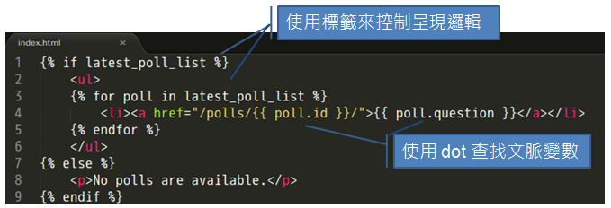
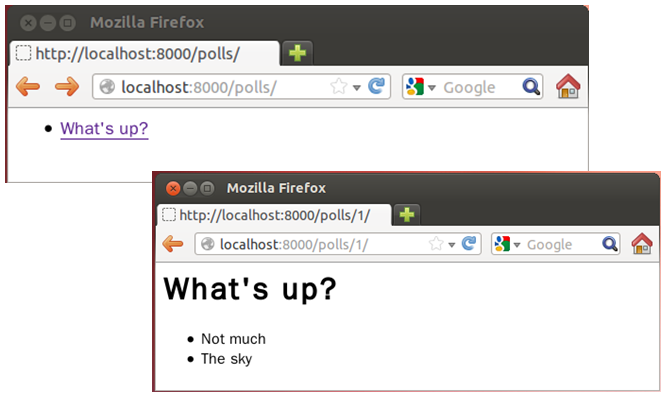
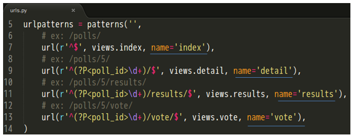
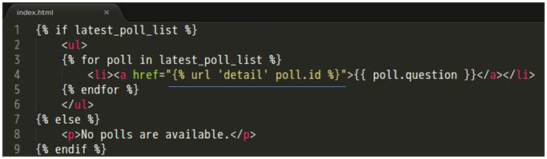

在 Python 2 Tutorial 第四堂（3） 中，我們在
polls/views.py 中撰寫回應結果，雖然概念上 polls/views.py 是屬於 View 的一部份，不過實際的畫面組織不建議撰寫在這當中，想想看，如果你想要 HTML 輸出，那麼直接在 polls/views.py 中撰寫 HTML 輸出，程式碼與 HTML 糾結在一起，會是什麼樣的混亂結果。 概念上
polls/views.py 是屬於 View 的一部份，不過建議當中只使用 Python 程式碼來準備畫面中動態的資料部份，但不包括頁面組織以及相關的呈現邏輯。你可以使用 Django 的模版系統，將頁面組織以及相關的呈現邏輯，從 Python 程式碼中抽離出來，你可以如下圖中，使用模版標籤的元素來控制呈現邏輯，使用 dot 查找語法來取得文脈變數（Context variable）： 
練習 12：撰寫模版
在你的 polls 目錄中建立一個 templates 目錄，Django 會在這個目錄中尋找模版，在 templates 目錄中建立另一個名為 polls 的目錄，並在其中建立一個名為 index.html 的檔案。也就是說，現在你建立了一個模版檔案 polls/templates/polls/index.html，接著將以下的程式碼放入模版之中：
{% if latest_poll_list %}
<ul>
{% for poll in latest_poll_list %}
<li><a href="/polls/{{ poll.id }}/">{{ poll.question }}</a></li>
{% endfor %}
</ul>
{% else %}
<p>No polls are available.</p>
{% endif %}接著再建立一個名為 detail.html 的檔案，並撰寫以下的程式碼：
<h1>{{ poll.question }}</h1>
<ul>
{% for choice in poll.choice_set.all %}
<li>{{ choice.choice_text }}</li>
{% endfor %}
</ul>開啟 polls/views.py，並修改
index 與 detail 函式為以下，記得 from import 的部份也要一致：
from django.shortcuts import render
from polls.models import Poll
from django.http import Http404
def index(request):
latest_poll_list = Poll.objects.all().order_by('-pub_date')[:5]
context = {'latest_poll_list': latest_poll_list}
return render(request, 'polls/index.html', context)
def detail(request, poll_id):
try:
poll = Poll.objects.get(pk=poll_id)
except Poll.DoesNotExist:
raise Http404 # 產生 404 回應
return render(request, 'polls/detail.html', {'poll': poll})其中
'latest_poll_list' 用來設定文脈變數名稱，而 render 函式第二個引數 'polls/index.html' 用來設定要呈現的模版檔案名稱。 接著使用
python manage.py shell 啟動 Python 互動環境，然後如下建立一個新的調查問題以及兩個選項：
from polls.models import Poll, Choice
from django.utils import timezone
p = Poll(question="What's up?", pub_date=timezone.now())
p.save()
p.choice_set.create(choice_text='Not much', votes=0)
p.choice_set.create(choice_text='The sky', votes=0)執行
python manage.py runserver 之後，你應該可以在使用瀏覽器請求相關網址時，看到以下畫面： 
在這個練習當中使用的
render 函式，實際上封裝了模版檔案載入、Context 物件建立、建立 HttpResponse 物件等細節的簡便函式，如果不使用 render 函式，那麼 index 函式就必須寫為：
from django.http import HttpResponse
from django.template import Context, loader
from polls.models import Poll
def index(request):
latest_poll_list = Poll.objects.order_by('-pub_date')[:5]
template = loader.get_template('polls/index.html')
context = Context({
'latest_poll_list': latest_poll_list,
})
return HttpResponse(template.render(context))你可以看到，Django 最後需要的是
index 傳回一個 HttpResponse 物件，而物件建構時，必須給它一個回應用的字串，只不過現在是透過模版系統來產生這個字串。 實際上，這個練習中的
detail 函式中，使用 Poll 指定主鍵來查詢物件，並在主鍵沒有對應物件時 raise Http404 的片段：
from django.http import Http404
# ...
def detail(request, poll_id):
try:
poll = Poll.objects.get(pk=poll_id)
except Poll.DoesNotExist:
raise Http404
return render(request, 'polls/detail.html', {'poll': poll})也可以用一個簡便的函式
get_object_or_404 修改為以下更簡潔的函式：
from django.shortcuts import render, get_object_or_404
# ...
def detail(request, poll_id):
poll = get_object_or_404(Poll, pk=poll_id)
return render(request, 'polls/detail.html', {'poll': poll})
get_object_or_404pk 參數，那麼就會自動呼叫指定類別上的 objects 之 get 方法來查詢。 回頭看一下模版檔案 index.html 中超鏈結部份的內容：
...
{% for poll in latest_poll_list %}
<li><a href="/polls/{{ poll.id }}/">{{ poll.question }}</a></li>
{% endfor %}
...超鏈結部份的網址是寫死的，如果像這樣的鏈結資訊有很多寫死在不同的模版檔案中，將來如果不想使用 polls 這個目錄，那就得記得修改每個模版檔案中的鏈結，還記得在
polls.urls 模組中撰寫了每個 url 函式的 name 資訊嗎？ 
你可以在模版檔案中，使用
{% url %} 模版標籤取得 name 設定的名稱，例如： 
這樣就會對應至
polls.urls 模組中，name 設定為 'detail' 的 url 資訊，自動產生鏈結用的字串，將來如果要改變鏈結，就只需要在 polls.urls 模組中修改，不用逐一修改每個模版檔案。